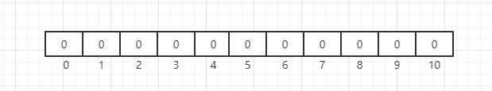
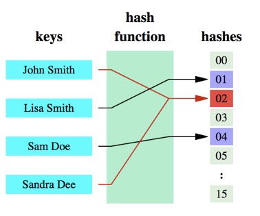
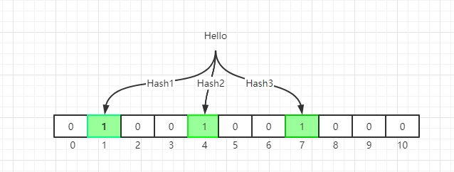

Problem
Think about this scenario, given a list of strings with number of N, where N is large than 1 million.
Let’s implement a data structure to check whether a target string is in given strings.
If N is not so huge, a HashDict could be used to build a dictionary. When N is huge, memory is the key point for this challenge.
Different data structures will give you different facility and benefits.
To properly use the power and accessibility of the data structures you need to
know the trade-offs of using one.
In this case, we need a data structure which optimized with space. This is where bloom filter can be used.
The Concept
Bloom Filter was proposed by Burton Howard Bloom in 1970. The related paper is: Space/time Trade-offs in Hash Coding with Allowable Errors.
It’s an efficiency in time and space with a very clever design. The cost for space efficiency is accuracy, we called it as a probabilistic data structure:
- When the returned result is false, it’s 100% correct.
- When the returned result is true, it may be wrong.
Why? Let’s come up with the details of bloom filter.
The bottom data structure of the bloom filter is a bit array(like BitMap). Initially, when the represented set is empty, all bits are 0:

When we initialize the bit array, we use multiple hash functions to compute multiple indexes according the the strings, and set the bit at index positions to 1.
Why we need multiple hash functions? This is the core idea of bloom filter. Think about HashMap, usually we use one hash function to calculate a hash value, but we also store all the keys in HashMap.
Different keys with same hash function may come out with the same hash value, this is called collision.
In below illustration, “John Smith” and “Sandra Dee” have a collision:

In bloom filter, we use multiple hash functions to reduce the possibility of collision.
Even the possibility of collision could be very small, it may happen.

For query API, we do similar hash calculations, but when we find one hash bit is not set to 1, we can safely return false. For naive Bloom Filter, the keys added into table can not be deleted. If we want to delete key, a variant named Counting Bloom Filter(CBF) could be used.
We can have some trivial tuning about the data structures, you can modify the false positive rate of your filter. From above description, a larger filter will have less false positives, and more hash functions will introduce more cost in computation. Given a Bloom filter with m bits and k hashing functions with n insertion.
Your false positive rate will be approximately $$ (1-e^{-kn/m})^k $$.
Implementation of C
|
Implementation of Python
Please refer to Pure Python Bloom Filter module. The usage is straight forward:
|
Real cases
Join my Email List for more insights, It's Free!😋